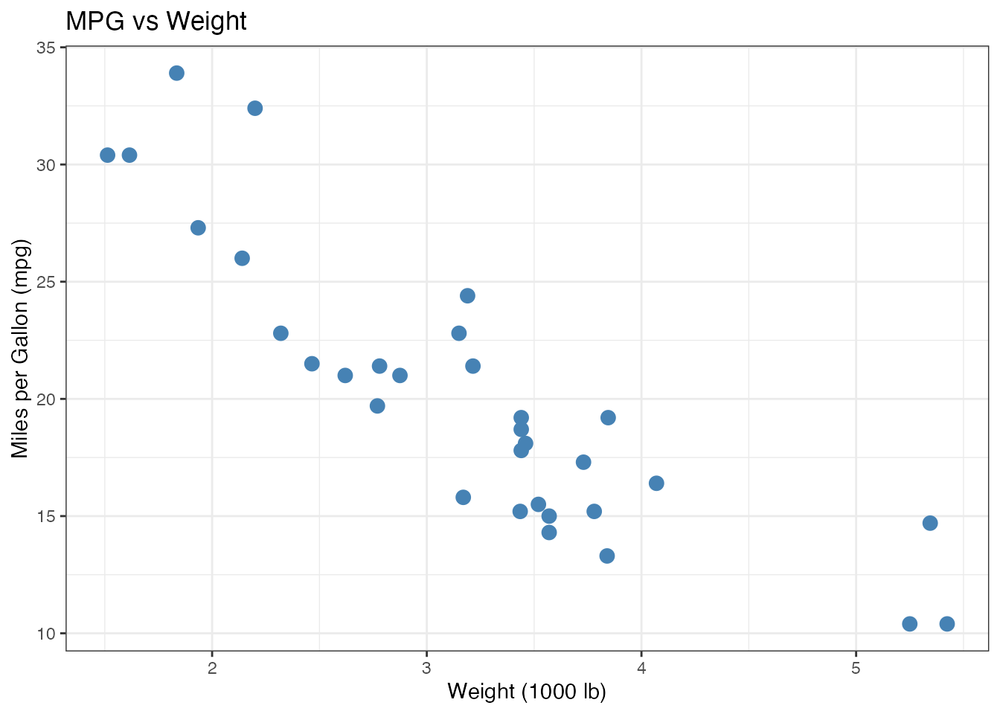
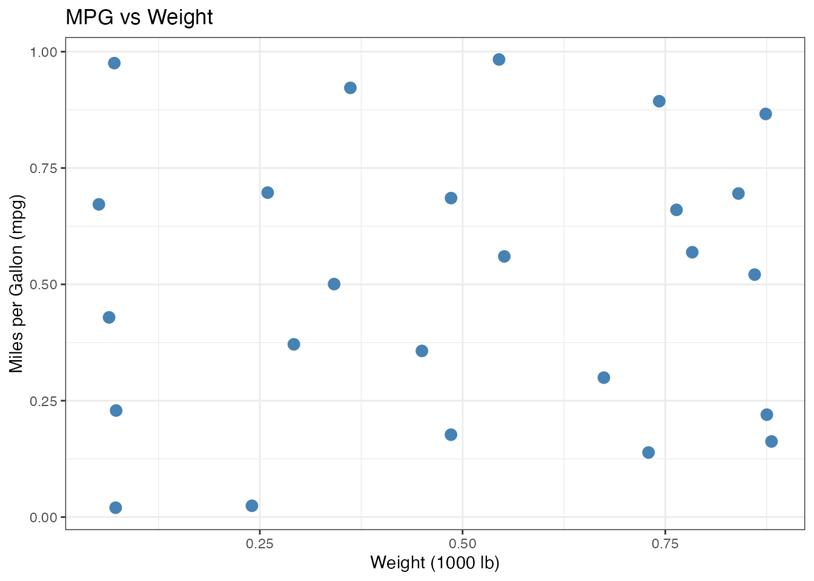
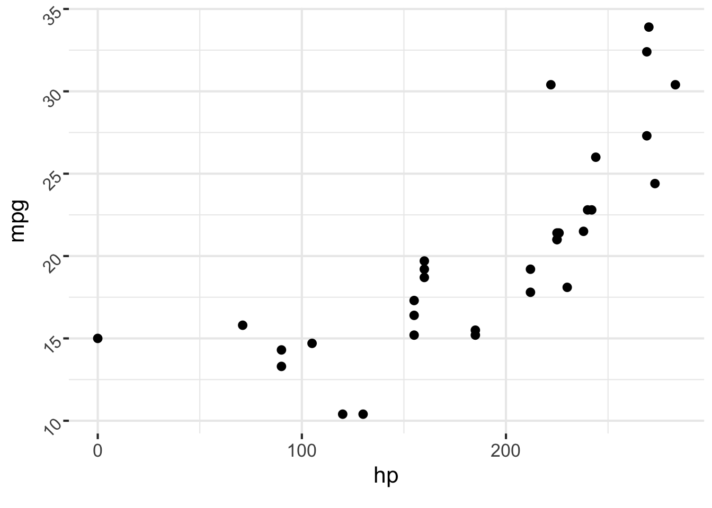
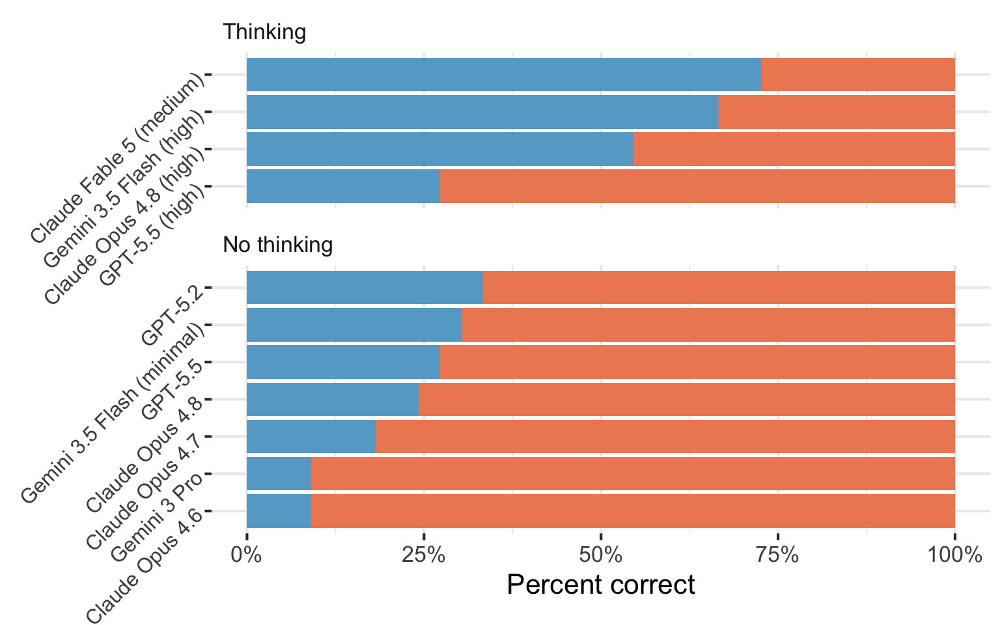

Programming with LLMs in R and Python
posit::conf(2026)
2026-09-14
12_plot-image-1ellmer and chatlas let you show the model your plots!
Create a basic mtcars scatter plot and ask GLM 5.3 Flash to interpret it.
How does it do?


plot mpg vs hp in
mtcarsand tell me what you see.

Correct Incorrect

Which model should you use?
Which prompt works best?
If one agent is better than another?
vitalsInspect
A set of test cases.
Each case contains:
The code that takes each input and produces an output.
It may make one model call or run a multi-step agent with tools.
The grading rule for each output.
It may compare the output with the target or use another grading method.
Task combines a dataset, solver, and scorer into an eval you can run.
| Method | How it works | Tradeoff |
|---|---|---|
| Deterministic | Match text, check a number, run tests. | Fast, deterministic, may be too narrow. |
| Model-graded | Another LLM judges the output against grading criteria. | Flexible, but the grader must be validated. |
| Human review | A person reads and grades the output. | High control for you, but slow and expensive at scale. |
15_evalsRun the eval. It grades Gemma 4 26B and Claude Haiku 4.5 on the same explanation rubric.
Open the viewer. Compare the responses and the grader’s explanations.
Which model followed the rubric better?
Put prompts in markdown files.
Clearly explain what you want the model to do in the system prompt.
Provide examples of what you want.
Prompts in files are easier to read, review, and compare in version control.
Short answer: Put instructions and background knowledge in the system prompt.
Put the current task in the user prompt.